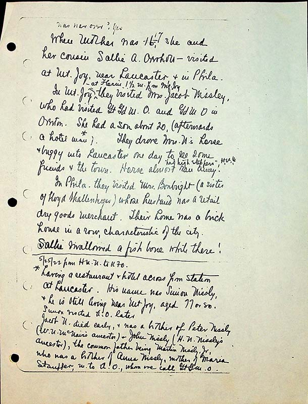

When Mother was 16 17, she and her cousin Sallie A. Overholt visited Mt. Joy, near Lancaster, & in Phila.
In Mt. Joy, ^ at Forin, 1 ½ m. from Mt. Joy They visited Mrs Jacob Nissley, who had visited Gt Gm O and Gd M O in Overton. She had a son about 20 (afterwards a hotel man **) They drove Mrs. N’s horse & buggy into Lancaster one day to see some friends & the town. Horse almost ran a way ^ had high steppers
In Phila they visited Mrs Bronbright (a sister of Floyd Shallenberger) whose husband was a retail dry goods merchant. Their home was a brick house in a row, characteristic of the city. Sallie swallowed a fish bone while there!
5/25/22 from H NN to KFO
**Having a restaurant and hotel across from Station at Lancaster. His name is Simon Nissly & he is still living near Mt Joy, aged 77 or so.
Simon visited A.O. later
Jacob N. died early, & was a brother of Peter Nissly( W.N. McNair’s ancestor) & John Nissly (H.N Nissley’s ancestor), the common father being Martin Nissley Jr, who was a brother of Anna Nissly, mother of Maria Stauffer, w. To A.O, we call Gt Gm O